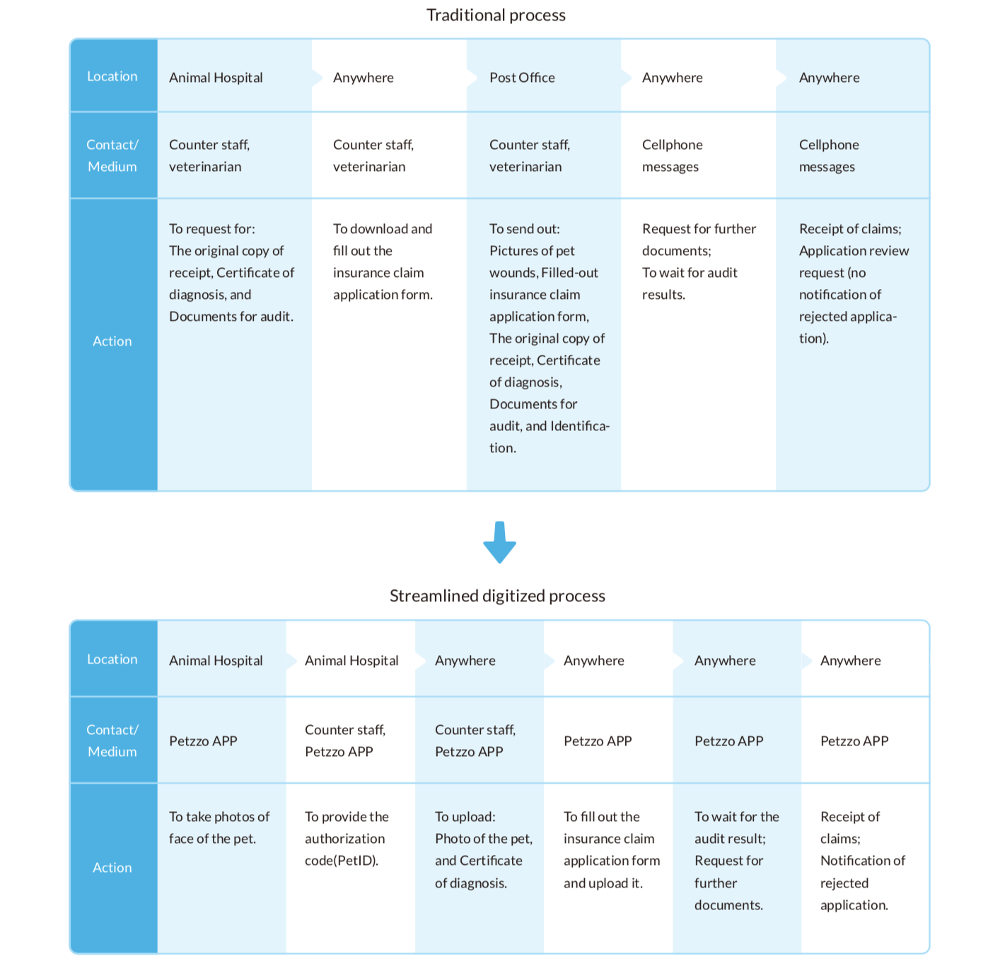

Petzzo is an innovative pet health care platform, which integrates pet insurance and medical information altogether.
Launch Petzzo MVP iOS/Android app
Processes that went through multiple channels can now be completed with Internet and Petzzo on hand.
Acts of exploiting loopholes by some unscrupulous pet owners can be mitigated through mechanisms of authorization codes and AI facial recognition technology.
The application processes of insurance are complicated.
Multiple channels are inevitable to get the necessary application documents for settlement of insurance claims.
It takes long to wait for insurance claims.
Current pet insurances have high loss ratio for insurance companies.
The schedule was very tight.
Insurance terms are complex with diverse restrictions.
Data from each system cannot be integrated due to technical and legal barriers.
Many information can't be confirmed immediately.
To identify the best solution plan under the restrictions of resources and regulations by sorting out the goals and requirements with PM and developers.
To design the key visual of the app by transform- ing the brand concept into visual styles.
I used 10 Usability Heuristics to define the feature design metric, used Stakeholder Map and User Journey Map to have a clear overview, used Card Sorting to organize IA and made quick prototypes for Usability tests.
Process of settlement of insurance claims:
(Left) Before users’ logging in, the default page of Petzzo is set as the login page rather than the registration page. This design strategy is chosen in view of Petzzo’s privacy concerns: access to the medical data and insurance functions kept and provided by Petzzo requires passwords whenever users log in to Petzzo, making the return visit rate of the login page comparatively higher than the registration page. There are two quick login methods (Touch ID or Face ID) for users to choose from.
(Center)To trigger users’ creation of a “pet” item on the page by using texts to describe the benefits of adding one.
(Right) To display the most frequently used functions and information on the pages with “pet” item.
(Left) To insert color beneath the texts that we hope users to notice. Light green color was applied with the intention to avoid users’ unnecessary fright at warning colors or wrong colors before they operate.
(Center) To add “pet mission complete” page, displaying the motion of “sprinkling flowers for celebration” to heighten users’ sense of accomplishment.
(Right) To remind users one more time that only cooperated hospitals can conduct the settlement of insurance claims; to reduce users’ burden of decision-making and to speed up the process flow by simplifying the buttons on the mission conducting page.
(Left) To give users an overview of the entire process of settlement of insurance claims in the first phase, helping them understand the action items at each step.
(Center) To save coding efforts and working time by taking photos of pets with the default camera function of smartphones. A page for adjusting face positions of users’ pets was designed to help the system recognize.
(Right) To present the hierarchy by font size and colors. The main actions are presented with the font size for title and primary font colors.
(Left) To enhance reading experiences of every type of mobile devices by categorizing message contents and adjusting font size and spacing to the finest regarding different smartphone screen sizes.
(Center) To present each settlement of insurance claims with card-based designs; to use icons to indicate users which components are interactive.
(Right) To use color changes to indicate users which animal hospital they are checking.
(Left) Unlike insurances and medical care, fortunate-telling is intended for fun, so I created a type of mystical color tone to harmonize with and set off the key green color, displaying the mysterious vibe of natal charts.
(Center) To present the natal chart in the concept of tarot cards. If users haven’t logged in, the results of natal charts will remain unflipped. Part of cards is revealed on the left and right sides to indicate there are other cards for users to check.
(Right) If users have already logged in, cards will be set behind the natal chart.